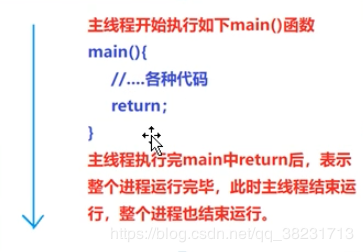
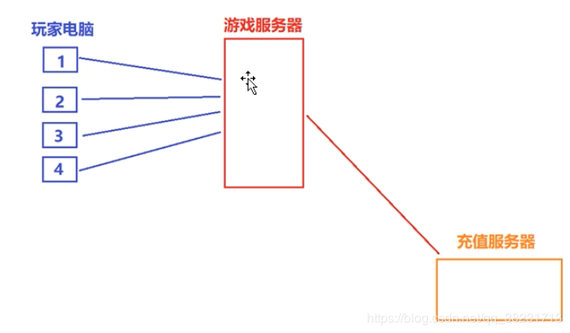
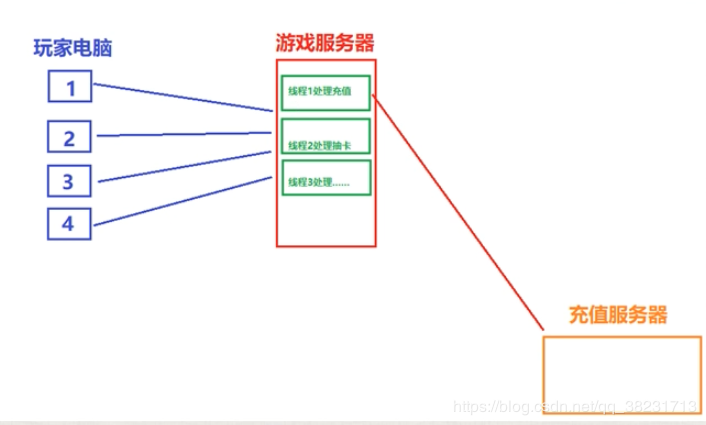

一、并发、进程、线程的基本概念和综述
并发，线程，进程要求必须掌握
1.1 并发
- 两个或者更多的任务（独立的活动）同时发生（进行）：一个程序同时执行多个独立的任务；
- 以往计算机，单核cpu（中央处理器）：某一个时刻只能执行一个任务，由操作系统调度，每秒钟进行多次所谓的“任务切换”。并发的假象（不是真正的并发），切换（上下文切换）时要保存变量的状态、执行进度等，存在时间开销；
- 随着硬件发展，出现了多处理器计算机：用于服务器和高性能计算领域。台式机：在一块芯片上有多核（一个CPU内有多个运算核心，对于操作系统来说，每个核心都是作为单独的CPU对待的）：双核，4核，8核，10核（自己的笔记本是4核8线程的）。能够实现真正的并行执行多个任务（硬件并发）
- 使用并发的原因：主要就是同时可以干多个事，提高性能
1.2 可执行程序
- 磁盘上的一个文件，windows下，扩展名为.exe；linux下，ls -la，rwx（可读可写可执行）
1.3 进程
- 运行一个可执行程序，在windows下，可双击；在linux下，./文件名
- 进行，一个可执行程序运行起来了，就叫创建了一个进程。进程就是运行起来的可执行程序。
1.4 线程
①
- a)每个进程（执行起来的可执行程序），都有唯一的一个主线程
- b)当执行可执行程序时，产生一个进程后，这个主线程就随着这个进程默默启动起来了
- ctrl+F5运行这个程序的时候，实际上是进程的主线程来执行（调用）这个main函数中的代码
- 线程：用来执行代码的。线程这个东西，可以理解为一条代码的执行通路

②
- 除了主线程之外，可以通过写代码来创建其他线程，其他线程走的是别的道路，甚至区不同的地方
- 每创建一个新线程，就可以在同一时刻，多干一个不同的事（多走一条不同的代码执行路径）
③
- 多线程（并发）
- 线程并不是越多越好，每个线程，都需要一个独立的堆栈空间（大约1M），线程之间的切换要保存很多中间状态，切换也会耗费本该属于程序运行的时间
必须使用多线程的案例


二、并发的实现方法
实现并发的手段：
a）通过多个进程实现并发
b）在单独的进程中，写代码创建除了主线程之外的其他线程来实现并发
2.1 多进程并发
- 比如账号服务器一个进程，游戏服务器一个进程。
- 服务器进程之间存在通信（同一个电脑上：管道，文件，消息队列，共享内存）；（不同电脑上：socket通信技术）
2.2 多线程并发
- 线程：感觉像是轻量级的进程。每个进程有自己独立的运行路径，但一个进程中的所有线程共享地址空间（共享内存），全局变量、全局内存、全局引用都可以在线程之间传递，所以多线程开销远远小于多进程
- 多进程并发核多线程并发可以混合使用，但建议优先考虑多线程技术
- 本课程中只讲多线程并发技术
三、C++11新标准线程库
以往
- windows：CreateThread(), _beginthread(),_beginthreadexe()创建线程；linux：pthread_create()创建线程；不能跨平台
- 临界区，互斥量
- POSIX thread(pthread):跨平台，但要做一番配置，也不方便
C++11
- 从C++11新标准，C++语言本身增加对多线程的支持，意味着可移植性（跨平台），这大大减少开发人员的工作量